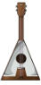

C’était pour moi la première fois que je participais à un projet si gros, j’ai par le passé fait 2-3 petits jeux en console par groupe de deux, mais jamais de jeu avec un moteur graphique et avec un si gros groupe. J’ai commencé à m’intéresser à l’informatique à mon entrée au collège et j’ai commencé à développer en troisième, j’ai par la suite enchaîné avec un parcours général au lycée avec option ICN en seconde et spécialité NSI en première et terminal. Je suis donc naturellement passionné par l’informatique, les jeux vidéo, même la « tech » en général. Découvrir ce concept est intéressant, passer de simple consommateur à créateur.
Je joue à des jeux vidéo depuis mon enfance, de tout sorte, passant des platformers, aux MMOs, aux FPS... Sortant d’un bac général avec comme spécialité NSI, l’informatique et le jeu vidéo étant mes principaux centres d’intérêt, je porte donc un grand intérêt au domaine de l’IT ainsi qu’au monde vidéo ludique. Le fait de créer mon propre jeu avec une équipe est quelque chose de très passionnant. De plus le fait de faire un jeu de rythme est un vrai défi pour moi en effet ayant déjà travailler sur unity mais seulement pour moi même en faisant uniquement des jeux pour apprendre unity, je n’ai donc jamais fait de jeu dans le style des jeux de rythme ce qui sera une bonne occasion d’améliorer mes compétences et mon travail d’équipe.
Tout d'abord, je tiens à dire que c'est la première fois que je prends part à un projet d'une telle envergure ! Passionné d'informatique depuis que je suis arrivé au lycée, j'ai toujours eu envie d'utiliser ce que j'apprenais pendant mes cours de programmation à des fins créatives. Malheureusement, je n'ai jamais eu le temps, de connaissances ou même de motivation pour me lancer. Ce projet est donc l'occasion de m'y mettre pour de vrai cette fois ! Faisant de la musique depuis mon enfance, et étant dessinateur à mes heures perdues, je vais pouvoir apporter à notre jeu un côté artistique et esthétique. De plus, notre projet est un jeu de rythme, cela veut dire que la musique est une partie centrale dans laquelle on doit y mettre du soin, que ce soit au niveau de la composition ou de la programmation !
Élève de 17 ans, d’EPITA, je ressors de trois années de lycée avec un diplôme du baccalauréat mention bien avec Mathématiques et NSI. Je m'intéresse à l'informatique depuis quelques années déjà mais je n'ai jamais eu l'occasion de créer de gros projets de mon côté, ce sera donc une première pour moi. Je suis passionné de jeux vidéo depuis mon enfance et ce projet sera un moyen d'en créer un à l'aide des autres membres de mon groupe. L'idée de créer un jeu de rythme me plaît particulièrement, je compose des musiques de temps en temps et ce jeu me donnera l'occasion de m'améliorer. Je suis très excité à l'idée de partir à la découverte de l'aventure que va être la programmation de ce jeu avec mes coéquipiers.
Ce projet est né pour répondre au travail demandé lors de notre semestre 2 à EPITA Toulouse, en effet lors du semestre 2, il est demandé aux étudiants de se mettre par groupe et d’élaborer un projet. Pour ce faire nous avons eu au préalable plusieurs discussions avec des idées et des concepts très basique afin de commencer à poser un cadre, nous nous sommes rapidement mis d’accord que notre projet serait un jeu, on est d’abord parti sur l’idée d’un jeu de rythme en 2D style un peu plateformer, puis nous nous somme au final dirigés vers un jeu de rythme RPG en 3D.